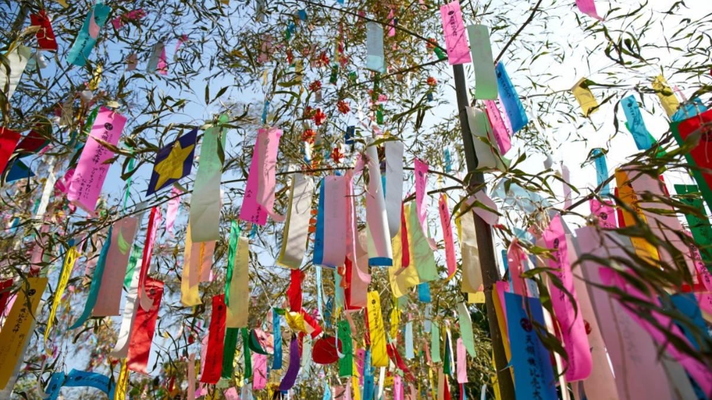
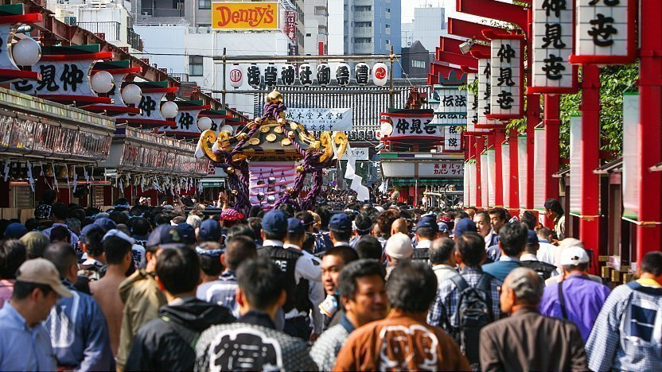
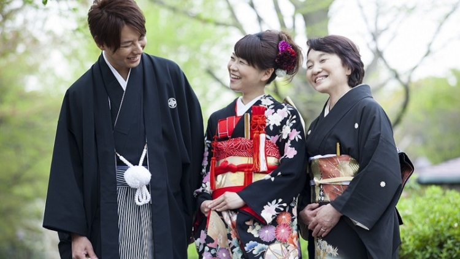
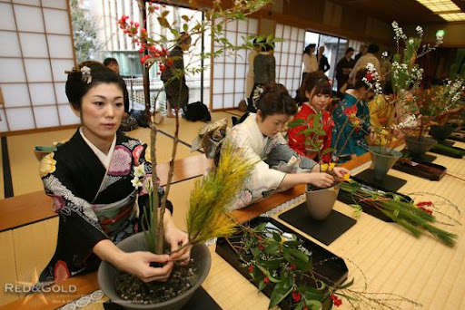
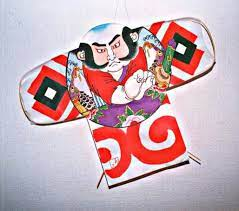
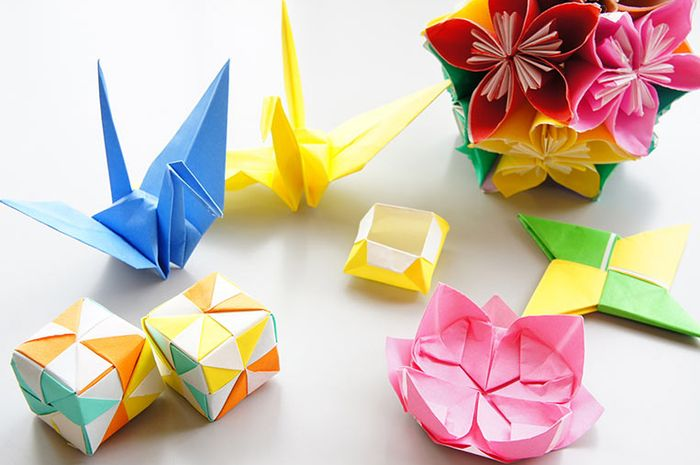

Beberapa Budaya dan Tradisi Jepang yang Unik dan Terkenal
- Tanabata 
- Matsuri 
- Kimono 
- Ikebana 
- Tako 
- Origami 
Tanabata atau Festival Bintang adalah salah satu perayaan yang berkaitan dengan musim di Jepang, Tiongkok, dan Korea.
Perayaan besar-besaran dilakukan di kota-kota di Jepang, termasuk di antaranya kota Sendai dengan festival Sendai Tanabata.
Di Tiongkok, perayaan ini disebut Qi Xi. perayaan Tanabata diadakan malam tanggal 7 Juli, hari ke-7 bulan ke-7 kalender lunisolar,
atau sebulan lebih lambat sekitar tanggal 8 Agustus. Asal-usul perayaan Tnanbata berasal dari legenda Tiongkok 'Niulang Zhinü'
[牛郎织女] yang veri Jepangnya mengisahkan cinta terlarang antara sepasang kekasih, yaitu seorang penenun bernama Putri Orihime
dan seorang gembala sapi bernama Hikoboshi. Pasangan kekasih ini dilambangkan oleh bintang Vega dan Altair, yang dipisahkan oleh
galaksi Bima Sakti, dan hanya dapat bertemu satu hari dalam setahun ketika sekawanan burung magpie membentuk sebuah jembatan untuk
mereka melintasi sungai surga.
Saat musim panas di Jepang, akan ada matsuri yang berhubungan dengan festival di kuil Shinto dan kuil Buddha.
Matsuri ini merupakan acara berdoa dan bersembahyang di kuil.
Karena budaya ini sangat menarik, maka banyak wisatawan yang ingin menyaksikan matsuri ini.
Budaya Jepang yang terkenal dan sangat khas adalah kimono.
Kimono merupakan pakaian tradisional khas Jepang.
Dulunya, kimono ini menjadi pakaian sehari-hari masyarakat tradisional Jepang.
Di zaman modern sekarang ini, kimono hanya digunakan untuk acara khusus saja.
Meskipun demikian, kimono menjadi budaya Jepang yang sangat dijaga kelestariannya.
Di Jepang, bunga merupakan hal yang sangat istimewa.
Jadi tidak heran jika Jepang mempunyai Ikebana atau kesenian untuk merangkai bunga.
Masyarakat Jepang mempercayai bahwa bunga merupakan tempat Tuhan untuk bersemayam.
Awalnya, ikebana dirangkai secara sederhana dan diletakkan di altar.
Namun sekarang, ada beberapa hal yang harus dipelajari untuk merangkai bunga.
Selain unik, tako juga termasuk budaya Jepang yang sangat menarik.
Untuk melaksanakan tako, masyarakat Jepang akan berkumpul di lapangan untuk bermain layang-layang.
Kerennya lagi, desain layang-layang di Jepang ini berbeda dengan negara lain.
Biasanya, tako hanya akan terlihat saat diselenggarakan festival kebudayaan saja.
Budaya Jepang lain yang terkenal di seluruh dunia adalah kesenian origami.
Origami ini banyak dipelajari anak-anak untuk mengasah daya pikiran.
Uniknya lagi, kesenian origami bisa membuat sebuah kertas menjadi berbagai macam bentuk.
Karena kesenian origami ini sangat terkenal, tidak heran jika banyak wisatawan asing yang ingin belajar kesenian origami.